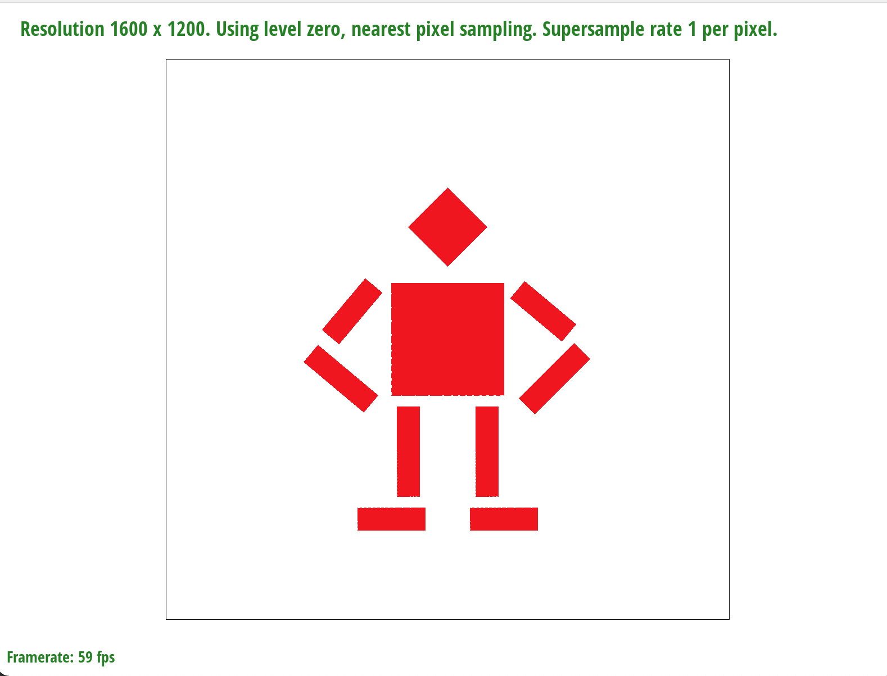

Overview
I implemented a rasterizer for scalable vector graphics (SVGs) in this project. My program will first parses input data from the given SVG and call different rasterizer (point, line, and triangle) to draw shapes accordingly. While the line rasterizer is built on top of the point rasterizer, the triangle rasterizer uses its own way for rasterization. Our triangle rasterizer will first sample points and check if each sample is inside triangle with "three-half-plane" test (un-optimized) or Barycentric coordinate (optimized). For edge cases where a sample lies exactly on an edge of the triangle, my algorithm decides to count them as inside the triangle. To tackle aliasing problem, I implemented jittered-sampling and super-sampling. After sampling, the rasterizer will then determine the color of each sample inside the triangle. For this, I developed an "color wheel" using barcentric interpolation, and performed texture mapping in the later tasks. For texture mapping, my algorithm supports two pixel sampling methods "nearest sampling" and "bilinear interpolation sampling" with three level sampling methods "zero", "nearest", and "bilinear interpolation". In addition, I also implemented the transforms, including translate, scale, and rotate. All details are provided below.
Task 1 - Drawing Single-Color Triangles
Walk-through: Our algorithm first align each given points into the corresponding pixel center with formular (floor(x)+0.5,floor(y)+0.5). Then we calculate the bounding box of the triangle. The bounding box is defined using four points: X_max, X_min, Y_max, and Y_min. These points are calculated by finding the corresponding max/min value of the X and Y of the three given triangle points.
Then, we loop through every sample point inside the bounding box to check if they land within our triangle area. To design this algorithm, we notice the following facts: 1) For any given point P(x,y) and vector p0->p1:(x1-x0,y1-y0), if vector V, p0->p: (x-x0,y-y0), and the normal (perpendicular) vector N of p0->p1, have V * N > 0, then the point p is on the side that the normal vector points toward. Similarly, if V * N = 0, the point p is on the line p0->p1; if V * N < 0, the point p is on the opposite side that the normal vector points toward. In other words, this equation gives us a way to check which side of the vector a given point p will land on. Derived from this fact, if we assume all three normal vectors of three edges of a triangle are pointing inward, then by checking if V * N > 0 for all three V and N, we could know if a point is inside the triangle. Similarly, we could tackle the edge case (where a point lies exactly on the line) by checking if V * N = 0. This way of checking if a point is inside triangle is known as "Intersection of three half-plane" or "Three line tests". As instructed, we consider a point is inside triangle when the point lies exactly on the edge.
Now we know the basic theory behind "Three line tests" method, but notice that we made an assumption, which is the three normal vectors are all pointing inward. This assumption is not always true as the three points of the triangle could be given in any order. So we have to consider how the order of the points are given, counter-clock-wise or clock-wise, to make sure all normal vectors are pointing inward. We could go through every case of how three points are given with if-else statement, but that will be too complicated. With our observation, we notice that a normal vector points inward only when it points to the third point of the triangle, which could be wriiten as V_3 * N_12 > 0. Thus, no matter which order our points are given, we could check this equation for each edge, and if the V_3 * N_12 < 0, we flip the normal vector by N = -N to make sure it points inward. Then we could simply use V_point * N > 0 for three edges to determine if a point is inside a triangle. A further optimization on this is duscussed on the extra credit part.
Our algorithm is no worse than the one that checks each sample with the bounding box of the triangle because that is exactly how our program works. Our algorithm checks every sample points within the calculated bounding box. More details of the algroithm has already been discussed above.
Here we present the "test4.svg" with pixel inspector centered on an interesting part of the scene. Through this image, we notice obvious aliasing on the edge of the triangle. This will be the proble we try to solve in the next task.

Extra credit: We optimized our approach by leveraging the power of Barycentric coordinate and performing several other optimizations. For using "Half-plane test" algorithm, we have to consider the winding order of the three given points, which raises additional run-time complexity. With Barycentric coordinate, we could easily determine if a point is inside a triangle by checking if all three coordinates are non-negative. This essentially integrates our observation mentioned in the previous section, and allows us to totally ignore the winding order of the given points, which makes the rasterization algroithm super simple but powerful. In addition, we did several minor optimizations such as removing the redundant part outside the for loop. Here is a timing comparision before and after optimization.
| Test case | Before optimizations | After optimizations |
|---|---|---|
| test3.svg | 0.14 | 0.016 |
| test4.svg | 0.01 | 0.004 |
| test5.svg | 0.03 | 0.006 |
Task 2 - Antialiasing by Sampling
Walk-through: Supersampling is a method used to remove aliasing such as jagged edges from images rendered. Except for perfectly vertical and horizontal lines, we need apply supersampling anti-aliasing to smooth curves and lines. In our supersampling anti-aliasing algorithm, we transform one sample pixel to n*n pixels where n is equal to the square root of sample rate. As each sub-pixel has a single color, we take the average of RGB values in those n*n sub-pixels and assign them back to the one sample pixel. The first thing we do is resize the color sample_buffer from the original size of width*height to width*height*sample_rate. Then, we revised our rasterize_triangle function from task 1. By updating the original triangle vertex coordinates according to the new supersampling color sample_buffer structure, we also updated our checking iteration bounds to fill all the sub-pixels inside triangle with single color by calling fill_pixel function. After that, in our final step, we revise our resolve_to_framebuffer function to average up all n*n sub-pixels color values back to one sample pixel by iterating through all the sub-pixels belonging to that one sample pixel.
When our supersample rate is 1 per pixel, the edge of the image is disconnected. While increasing the supersample rate from 1 to 16, the edge of the image gradually becomes continuous. The outer edge of the image under increased supersample rate seems more and more blur. This result is caused by the process of averaging up the sub-pixels color value to the sample pixel, as some sub-pixels in the sample pixel is not inside the triangle and therefore those sub-pixels color are all white. With this in mind, we can tell that the lighter sample pixel color, the less sub-pixels of the sample pixel are inside the triangle.
Extra credit: Besides super-sampling, we also implemented jittered-sampling. Unlike super-sampling, where we put all sample at the center of the subpix, jittered-sampling uniformly sampled over the sub-pixel. Therefore, the exact position of each sample point will have a vaired position. This is helpful to reduce aliasing artifacts, such as moiré patterns, casued by regular sampling (same space between each sample point).
Task 3 - Transforms
Walk-through: In terms of transforms, we provided three matrix for the translate, scale, and roate. We used homogenuous coordinate for doing so. For the drawing, we tried to put robot's hands on hips. As we notice that the translation of the upper arm also applies to the lower left arm, we started by adding a rotation and adjusting the translation on the upper left arm. After putting upper left arm at an ideal position, we adjusted the translation and rotation of the lower arm. We also stretched the lower arm a bit to make our drawing more realistic. The similar changes has beed done to the right arm, left leg and right leg as well.
Extra credit: I implemented view port rotation function for this task. With "Q" and "E", users could rotate the viewport by 90 degrees. I modified svg_to_ndc before it is converted to screen space. That means, I multiplied rotation matrix by the svg_to_ndc matrix and use the product as new ndc. As new ndc is the rotated one, we will see a rotated image when the ndc is converted to screen space.
Task 4 - Barycentric Coordinates
Walk-through: Barycentric Coordinate to me is about representing the relationship between three points of a triangle. That means, instead of caring about the absolute position of the three vertex in a bigger coordinate, barycentric coordinate only care about the relative position of three vertex, and thus build a coordinate between three vertex. Thus, from this perspective, each point inside the triangle could be represented as a joint contribution of three vertex. Thus, the multiplier of A,B,C represents the weight of each vertex - how much does it contribute to a given point. In addition, another way of thinking weight is the area the point formulate with two vertex.
Task 5 - "Pixel sampling" for texture mapping
Walk-through: Pixel sampling is mapping data from a given source to the image. In our task 5, we mapped the data from a texture image to our screen by sampling. While our screen coordinates are in x, y coordinate frame, the textures are in u, v coordinate frame instead. In order to map the textures to our screen, we used two pixel sampling methods which are nearest pixel sampling and bilinear pixel sampling. In our nearest pixel sampling method, we first convert the original x, y location coordinates into u, v texture coordinates by using barycentric coordinate interpolation as the three vertex of the triangle provided their x, y location coordinates and also u, v texture coordinates. After computing the u, v corresponding to the pixel inside the triangle, we rounded its u, v to refer to the nearest u, v texel and mapped the nearest texel color value to the screen . The second method is bilinear pixel sampling. While nearest pixel sampling directly maps the nearest texel color, bilinear pixel sampling uses four nearest texels to map the color on screen. For a typical converted u, v texture coordinates, we referred to four nearest texels by taking ceil and floor of converted u, v. The original converted u, v is inside the bigger texel composed by the four nearest texel. The converted u, v is at distance s from the left texels in u dimension and distance t from the bottom texels in v dimension. The distance s and t were used to linearly interpolate the converted u, v with respect to the four nearest texels. The calculation in our linear interpolation used two horizontal lerp helper function and one vertical lerp function to get the linearly interpolated texel color values among four nearest texels. Compared with nearest pixel sampling method, bilinear pixel sampling method renders a smoother image than nearest pixel sampling.
At supersample rate 1, bilinear pixel sampling did a better job in taking surrounding pixels into account. As a result, the image has smoother transition between different textures, while the image from nearest pixel sampling failed to capture those smooth transitions. As supersample rate increased to 16, the images from two methods seem to be identical, since the increased supersampling rate allows the nearest pixel sampling method to capture the transitions in texture color more easily. However, the image quality produced by bilinear pixel sampling still outperforms that produced by nearest pixel sampling with smoother transitions even at high supersampling rate. In general, when the texture changes is condense and supersampling rate is low, the difference between the two method is most obvious as nearest pixel sampling method is unable to capture those quick and condense texture changes.
Task 6 - "Level sampling" with mipmaps for texture mapping
Walk-through: Sometimes when we try to texture map a scene, we run into a problem which is that different parts of the scene require different levels of detail. For example, the scene front-most should be much more detailed than the scene far away. In these cases, we appeal to the concept of variable granularity. In other words, we will vary the detail of the textures we sampled depending on the size and distance of the objects in the scene. We can do this by using mipmaps. We compute various miplevels, where each successive miplevel is a lower resolution version of the previous miplevel texture. Level sampling is then used to determine which miplevel to sample from. To get the level of the sample pixel, we took
du/dx and dv/dx stand for the gradient of u/v in x domain of the sample pixel, while du/dy and dv/dy stand for the gradient of u/v in y domain of the sample pixel. D is the level of the sample pixel. In order to get dx_uv and dy_uv, we additionally took the barycentric coordinates of uv with respect to the uv of three triangle vertex among a point at right and a point above. After implemented this algorithm in our get_level function, if we call nearest level sampling method, we directly output the rounded level and input it into pixel sampling function. If we call linear level sampling method, we conduct a lerp function by using the similar concept in bilinear pixel sampling. By taking the floor and ceil value of the level, we get two nearest levels and conduct linear filtering based on the bilinear filtering pixel sampling result among the two nearest levels to get the texel values of corresponding sample pixel.
When the program is conducting linear level sampling, bilinear pixel sampling at higher supersampling rate, the computer renders a better image with smoother lines and logical details. However, the GPU is dealing with more pixels at higher supersampling rate and conducting more operations caused by bilinear filterings compared to simply mapping the texture image onto the screen. Such a tradeoff leads to longer operation time and larger memory space.